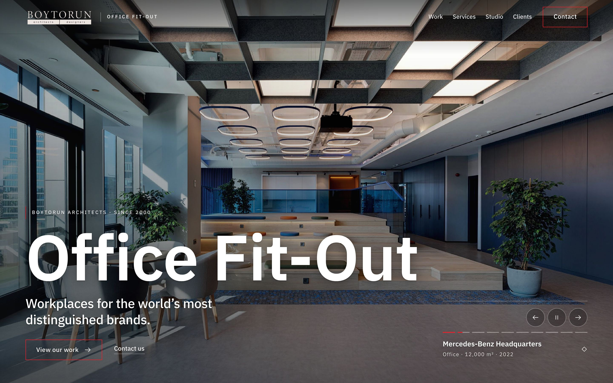
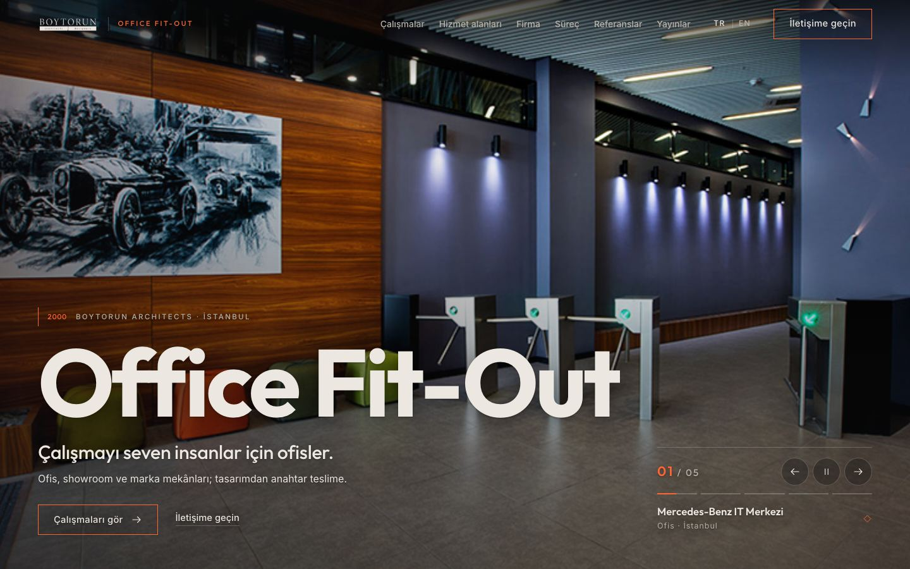
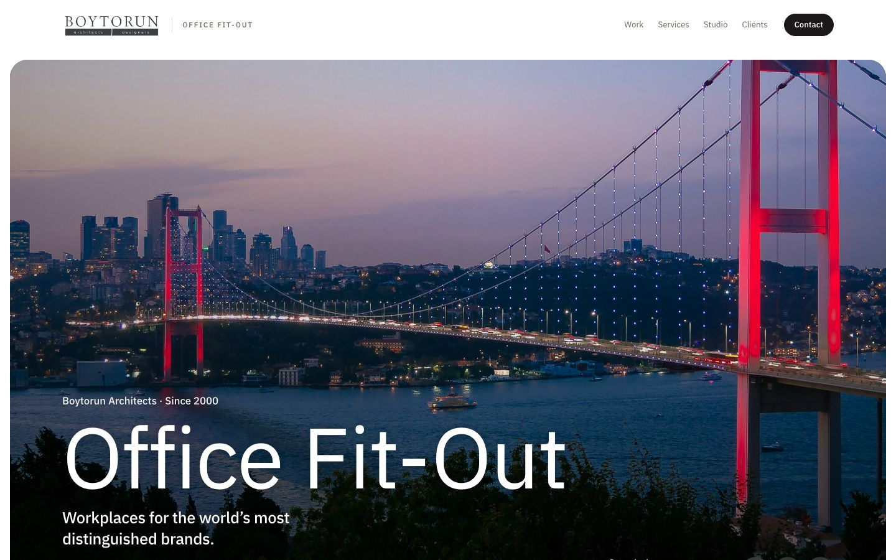

Boytorun Office Fit-Out
Ana proje
V1.1
V1’in şablonu, açık tema, tam ekran slayt.
Siteyi aç

Diğer seçenekler

V1
İlk sürüm. Koyu tema, tam ekran slayt.

V1 Alternatif
Açık tema, sade ve Apple benzeri düzen. Kısa ana sayfa.